Погода
Это состояние атмосферы в конкретном месте и моменте времени. Погода может быстро меняться: утром дождь, а к обеду выглянуло солнце. Изучает и прогнозирует погоду метеорология.
О погоде говорили ещё древние греки: Аристотель, например, в «Метеорологике» искал естественные причины погодных явлений.
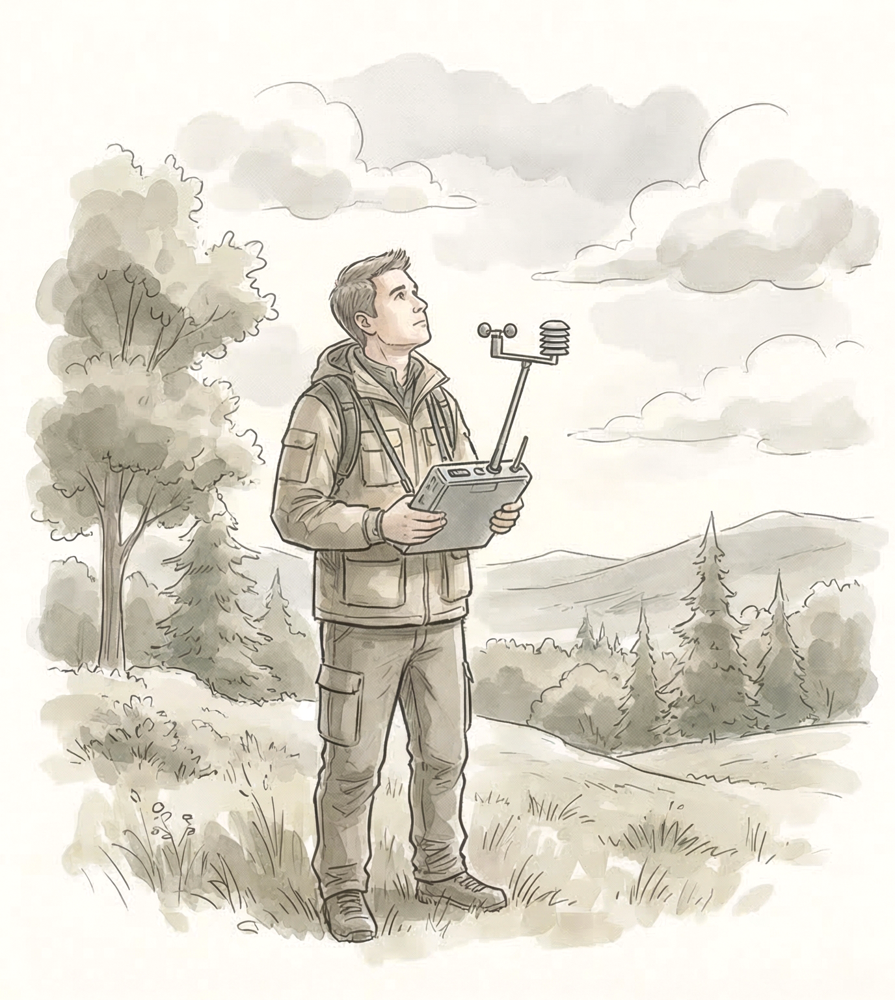
Климат
Это ансамбль состояний всех слоёв климатической системы — атмосферы, гидросферы, биосферы, криосферы, верхнего слоя литосферы, которые характерны для определённой местности. Изменение климата — процесс, который занимает десятилетия, а иногда и тысячелетия.
Ещё в 400 году до н.э. в Греции философы изучали, как климат влияет на развитие общества и разнообразие народов.
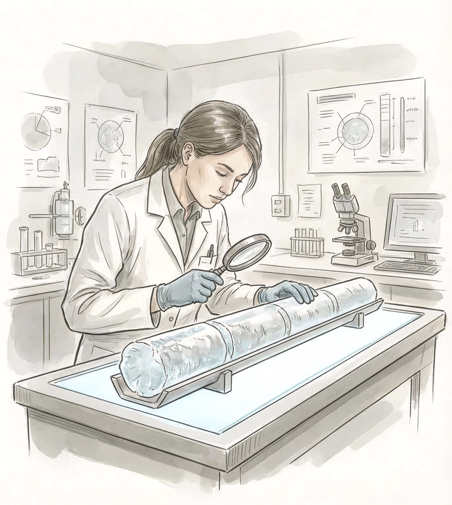
Погода описывает текущие атмосферные условия, а климат — типичные условия в данном регионе на протяжении длительного периода времени.
Климат Земли
Климат Земли менялся вместе с историей планеты. Наша планета пережила ледниковые периоды и потепления, вместе с этим менялись границы континентов, состав атмосферы, набор живых существ и растений.
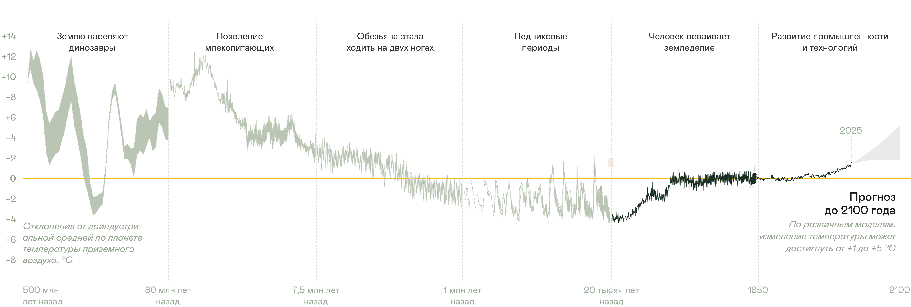
Парниковый эффект
Атмосфера Земли — это её естественный терморегулятор. Она сохраняет тепло и создаёт условия для жизни. Температуру планеты определяет не только удалённость от Солнца, но и парниковые газы в атмосфере.
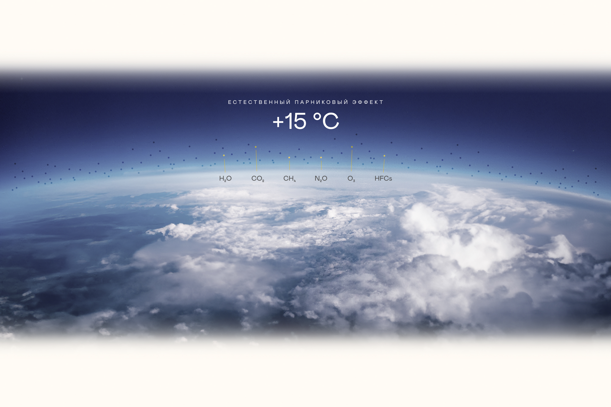
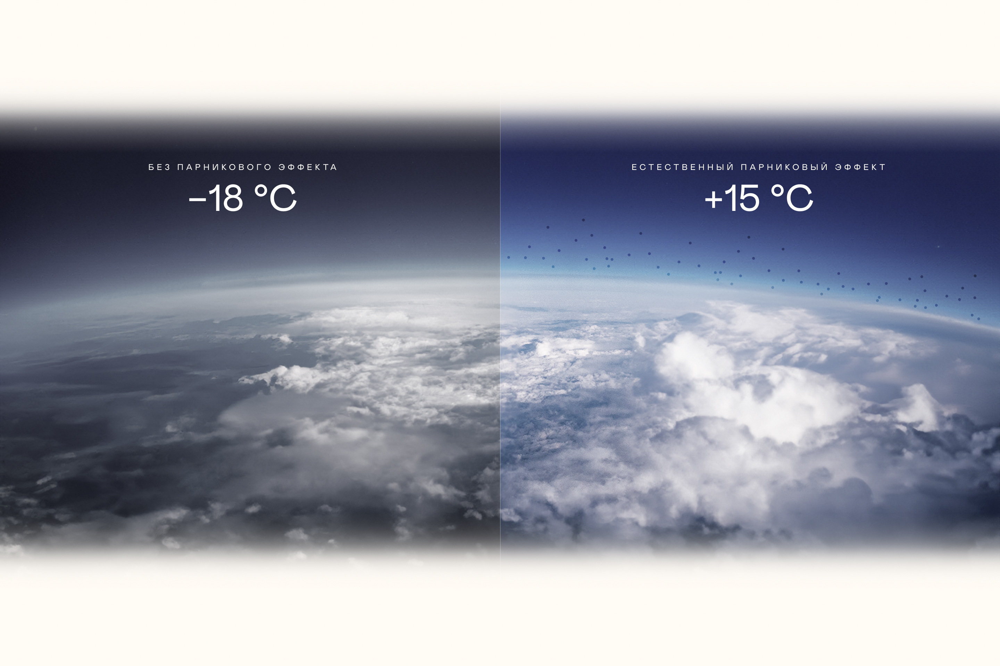
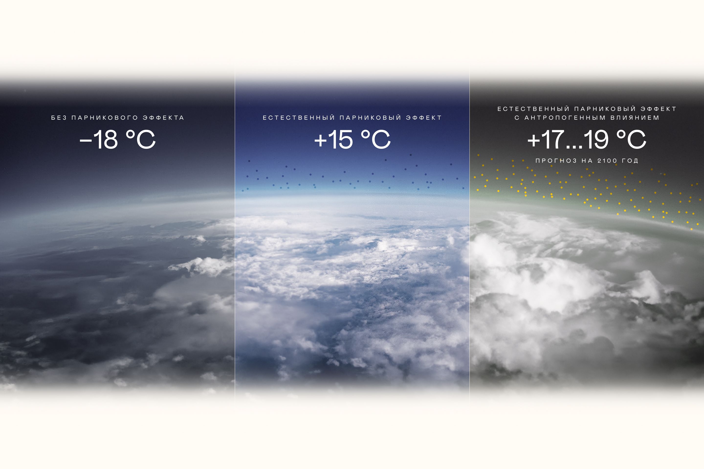
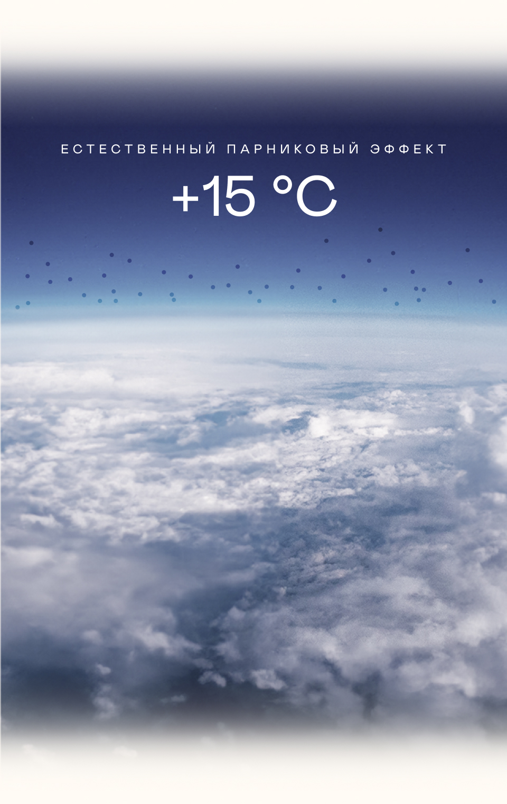
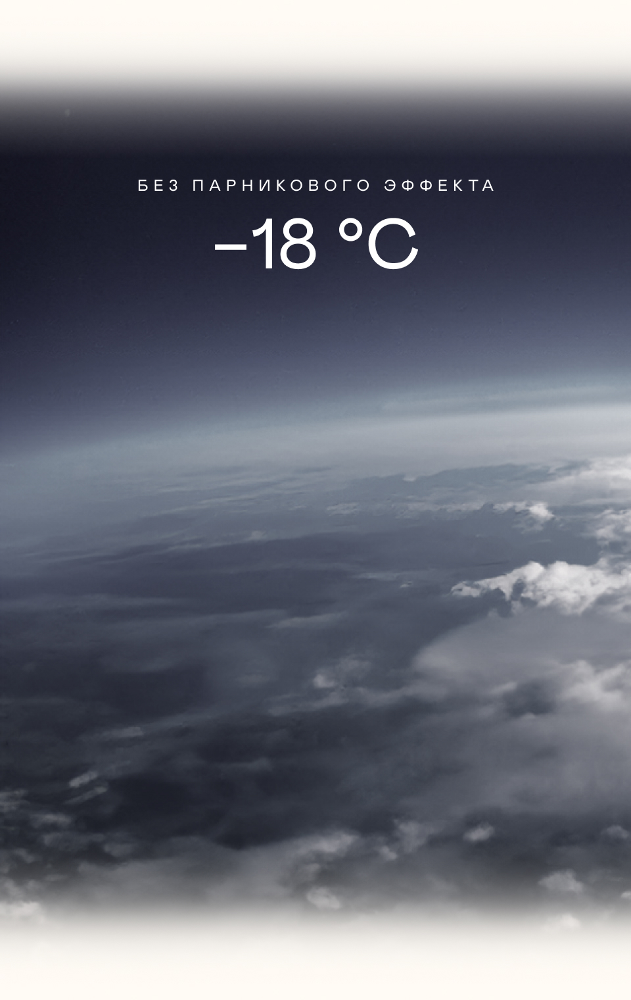
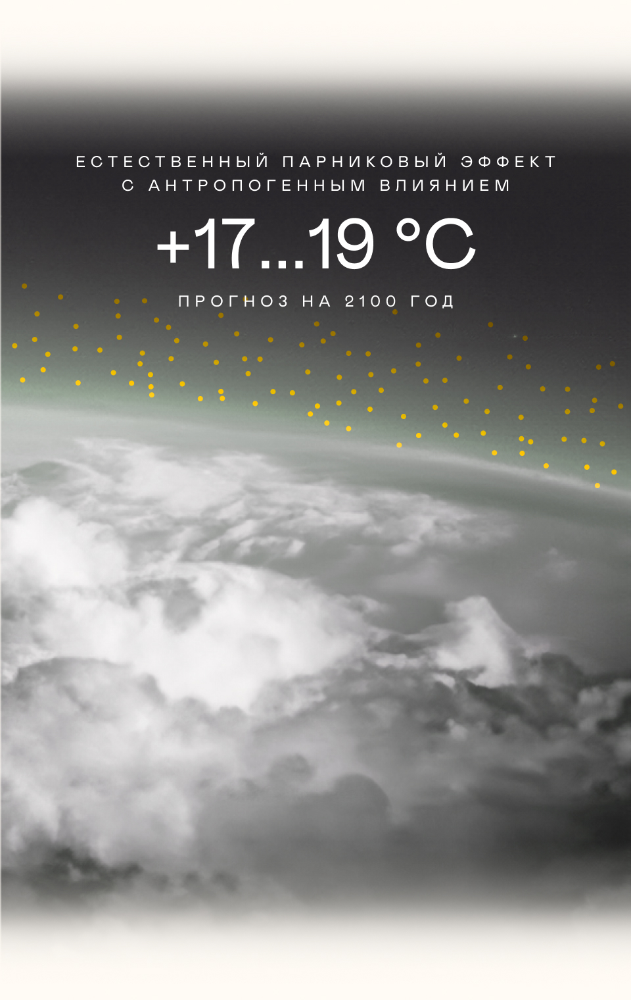
Парниковые газы задерживают тепловое инфракрасное излучение поверхности Земли и не дают ему полностью уйти в космос. От этого температура воздуха повышается.
Благодаря парниковому эффекту средняя температура воздуха на Земле поддерживается на комфортном уровне около +15 °C. Без него средняя температура на Земле была бы −18 °С.
Активная промышленная деятельность человека усиливает парниковый эффект и приводит к тому, что концентрация парниковых газов в атмосфере растёт.
Когда концентрация парниковых газов растёт, парниковый эффект усиливается и растёт температура воздуха в нижних слоях атмосферы. Это приводит к глобальному потеплению.
Термины «глобальное потепление» и «изменение климата» часто путают или используют взаимозаменяемо — это неправильно.
Глобальное потепление — повышение совокупных температур приземного воздуха и поверхности моря, усреднённых по земному шару за 30-летний период.
На графике хорошо видно ускорение глобального потепления. Если до середины XX века температура менялась слабо, то в последние 50 лет мы наблюдаем беспрецедентно быстрый рост.
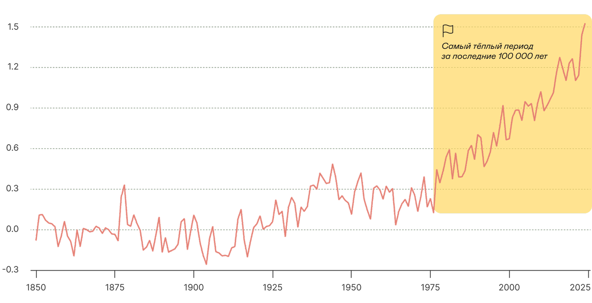
Изменение климата — это более широкий круг изменений, и глобальное потепление — лишь их часть. Эти изменения происходят на планете с середины XIX века, их спровоцировал рост выбросов парниковых газов от деятельности человека.
Деятельность человека — сельское хозяйство, промышленность, вырубка лесов и урбанизация — усиливает нагрузку на окружающую среду
Это приводит к росту концентрации парниковых газов (CH₄, CO₂, N₂O) и нарушению углеродного цикла
В результате усиливается парниковый эффект, из-за чего больше тепла задерживается в атмосфере
Это вызывает климатические изменения: потепление, изменение осадков, таяние льдов, повышение уровня моря и сдвиги океанических течений
В итоге возникают серьёзные последствия — затопление городов, рост ущерба, бедствия, болезни и потеря биоразнообразия
Разные отрасли экономики генерируют разные парниковые газы и в разных количествах. Это связано с тем, какие технологии и ресурсы они используют.
Больше всего углекислого газа (CO₂) дают энергетика и топливная промышленность. Сельское хозяйство в основном производит метан (CH₄). А в химической промышленности заметную долю составляют закись азота (N₂O) и фторсодержащие газы.
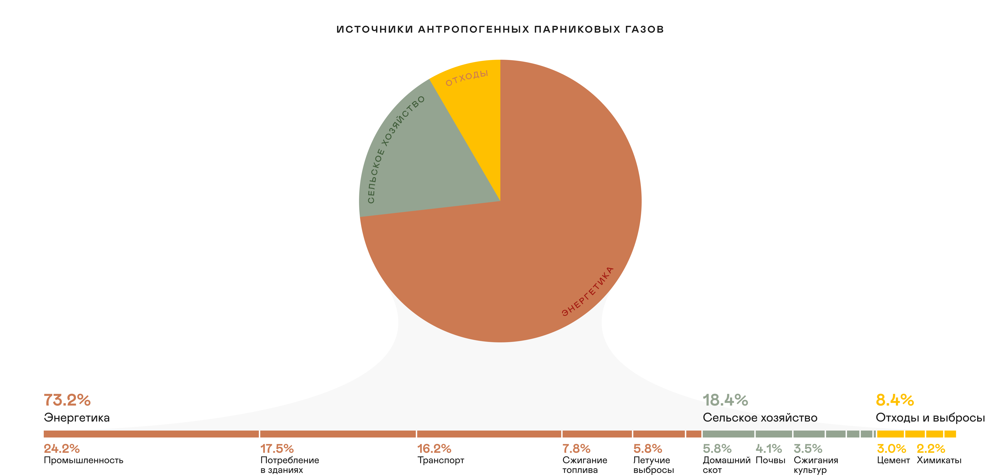
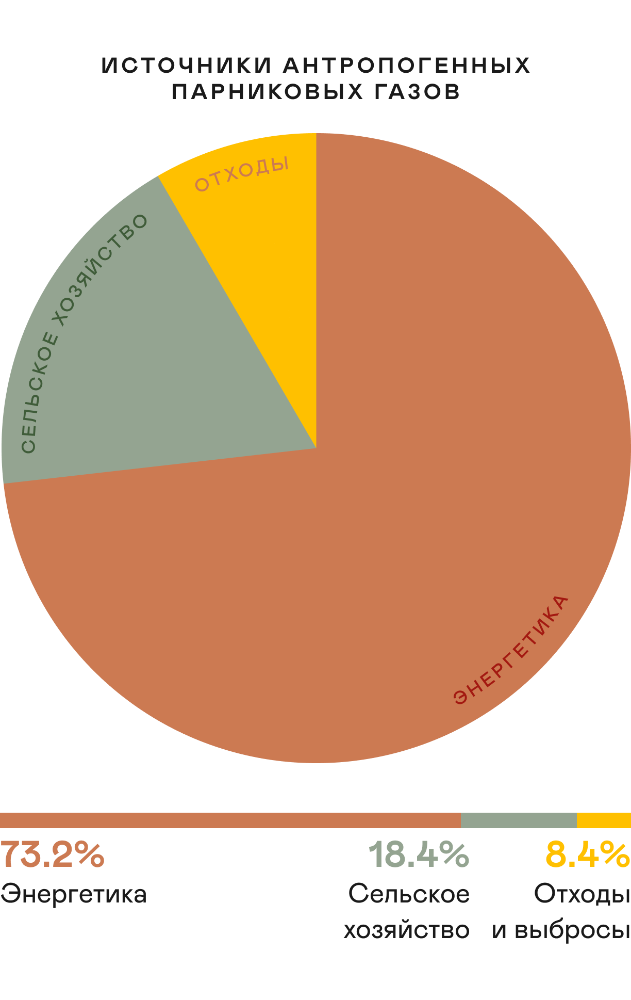
Можно ли прогнозировать изменение климата
Изменения климата можно прогнозировать, и ученые разработали для этого глобальные климатические модели. Чтобы повысить качество прогноза, ученые используют целые ансамбли моделей. Например, широкое распространение получил проект Взаимного сравнения совмещенных моделей Всемирной программы исследований климата (CMIP). Среди прочих в нём используется и климатическая модель Института вычислительной математики РАН.
Под капотом климатической модели — система уравнений, описывающих взаимодействие атмосферы, океанов, суши, ледников, биосферы. В моделях на основе физических, химических и биологических процессов рассчитываются ключевые климатические переменные: температура, давление, влажность, ветер.
Энергия не исчезает, а переходит из одного вида в другой
Объясняет зависимость излучения от температуры, помогает объяснить парниковый эффект
Показывает зависимость давления водяного пара от температуры
Описывают движение жидкостей и газов в атмосфере и океане
Чтобы оценить, насколько хорошо работает климатическая модель, результаты моделирования сравнивают с фактическими данными за выбранный исторический период. Это показывает точность моделей и необходимость уточнить их параметры.
Ученые по всему миру проверяют и сравнивают модельные расчеты с фактическими наблюдениями. Такая многократная проверка повышает доверие к климатическим моделям.
Какие факторы учитывают климатические модели
Точность климатической модели зависит от того, насколько полно она описывает реальный мир. Вот какие сложные природные процессы и объекты заложены в расчеты, чтобы модель выдавала достоверный прогноз.
Начиная с 1970-х годов, климатические модели развивались и учитывали всё больше факторов и становились точнее. За физическое моделирование климата Земли, количественную оценку изменчивости и надежное прогнозирование глобального потепления в 2021-м году была вручена Нобелевская премия по физике.
Современная климатология в России
Весомый вклад в развитие климатологии внесла и отечественная наука. Её развитие началось задолго до появления компьютерных моделей и было связано с именами выдающихся учёных.
В России изменение климата изучают несколько ведущих учреждений. Вот лишь некоторые из них.
ГГО
Главная геофизическая обсерватория им. А. И. Воейкова
ИФА РАН
Институт физики атмосферы им. А. М. Обухова
ИГКЭ
Институт глобального климата и экологии им. академика Ю. А. Израэля
МГУ
Московский государственный университет им. М. В. Ломоносова
ИВМ РАН
Институт вычислительной математики
ИМКЭС СО РАН
Институт мониторинга климатических и экологических систем
Теперь, когда понятны научные основы изменения климата, можно перейти к его видимым проявлениям. В следующем разделе расскажем, как тают ледники, меняется океан и что происходит с вечной мерзлотой.